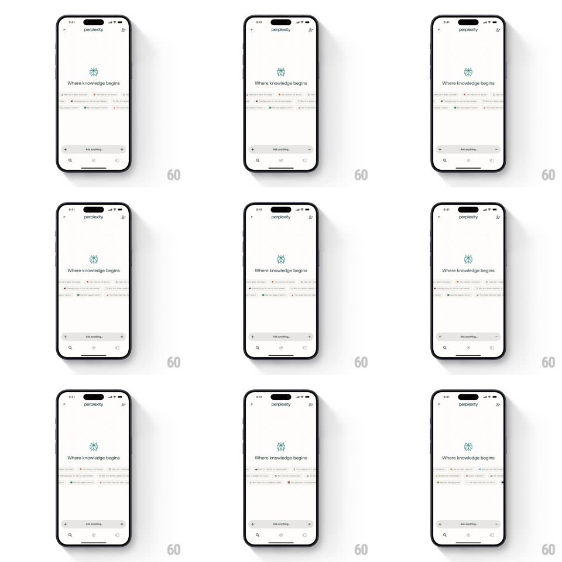

Media
Frame-by-frame

Rebuild this animation 1:1: Perplexity's getting-started screen - beneath the "Where knowledge begins" mark, rows of suggested-query chips scroll continuously in alternating directions like a marquee.

Rebuild this animation 1:1: Perplexity's getting-started screen - beneath the "Where knowledge begins" mark, rows of suggested-query chips scroll continuously in alternating directions like a marquee. ## Integration Integration: stack-agnostic spec - springs given as stiffness/damping, timed motions as duration + curve; map every value to your framework and animation library of choice. ## Scene A white home screen: the Perplexity wordmark at top, the teal logo mark with "Where knowledge begins" centered, and beneath it 2-3 horizontal rows of suggestion chips (small pills with an icon and a query). An "Ask anything..." input bar and tab bar sit at the bottom. ## Motion spec Pattern: alternating marquee chip rows. - Each row scrolls horizontally forever at a slow constant speed (~24px/s); adjacent rows move in opposite directions (row 1 left, row 2 right, row 3 left). - Rows loop seamlessly: chip sequences repeat so no gap ever appears at either edge. - Rows fade in on screen entry (opacity + translateY 8px, 300ms, staggered 100ms top-down) after the logo and tagline settle (fade, 400ms). - Tapping a chip: it presses (scale 0.96, 100ms), the row pauses, and the query lifts into the input bar (the chip's text flies to the input, 300ms) before submitting. - Touch-dragging a row temporarily takes manual control (tracks finger 1:1); on release it eases back to marquee speed over 800ms. - Row edges fade out with a 24px gradient mask so chips dissolve instead of clipping. ## Calibration - Marquee speed is slow enough to read every chip; never faster than ~30px/s. - The input bar and logo are perfectly still - only the chip rows move. ## Reduced motion Rows are static; chips scrollable by hand only. ## Don't miss - Chips are light gray pills with tiny topic icons - no filled or colored chips. - The center column stays empty between tagline and rows; the screen breathes.